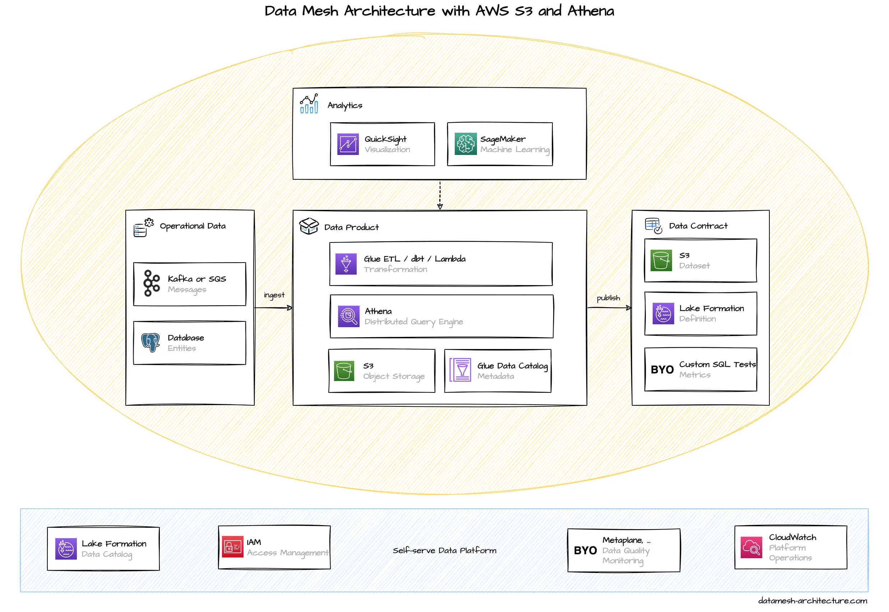

We often see Data Mesh implementations relying on AWS S3 and Athena as the primary means to share and query data products.
Interestingly enough, most data mesh implementations on AWS are using S3 and Athena, and not Redshift, which would be more the equivalent to Google’s BigQuery approach. We assume this is mainly because S3 and Athena are more simple to use, serverless, and billed on a pay-per-use basis, without the need to provision clusters upfront.
AWS S3 is the central component for storing analytical data. S3 is a simple file based object store and data can be stored in many different formats, such as CSV, JSON, Avro, or Parquet. S3 buckets are used for all stages: raw files, aggregated data, and data products. Metadata and queries are often stored as S3 files, as well. All data relevant AWS services and most independent software product have an interface to S3, either as a sink or as a source. AWS Athena supports querying multiple JSON files stored in different S3 buckets.
Every domain team typically has their own AWS S3 buckets to store their own data products, either on a shared AWS account or in a team AWS account.

Analytical queries are executed through Athena that queries S3 files and other datasets with standard SQL and performs cross-dataset join operations. Athena uses Presto, a distributed query engine. Athena works directly on S3 files without the need to import data first, but it requires to know the schema of the files, so metadata need to be defined first, either manually, or by using AWS Glue Data Catalog which can crawl files to infer the structure.

AWS has a number of different solutions to build data pipelines for cleaning, pre-processing and transforming S3 files. A serverless approach is to use AWS Glue ETL, which executes Spark or Python scripts and schedules jobs. The AWS Glue Studio also provides a visual editor to build and manage ETL scripts.

Amazon QuickSight is the data visualization tool provided by Amazon. It uses an in-memory cache, called SPICE that allows quick calculations and aggregations, once the data is imported.

Governance, Data Catalog, and even policy automation can be implemented through AWS Lake Formation. In Lake Formation S3 locations from different AWS accounts can be linked. The data in S3 files can be documented in the Data Catalog, including the data schema. Data sets can be tagged with special LF-Tags to give table and columnar-level permissions. Data loss prevention can be automated by enabling Macie to continuously scan S3 buckets for sensitive data and potentially unwanted data exposures.